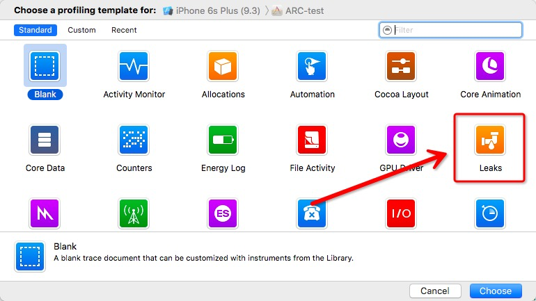

反馈请联系hertz@hertzwang.com,谢谢
关于内存管理
参考：
1、官方文档 2、唐巧-理解iOS的内存管理
应用程序内存管理是指程序运行时内存分配、使用、完成后释放的管理。一个好的程序尽可能少使用内存。
管理方法
Objective-C提供两种应用程序内存管理方法：
- 手动管理（manual retain-release，简称MRR，国内习惯叫MRC），通过跟踪拥有的对象来明确管理内存。这是使用基础类NSObject与运行时环境结合提供的模型（称为引用计数）来实现的。
- 自动引用计数（Automatic Reference Count，简称ARC），在2011年WWD上提出的。ARC背后的原理是依赖编译器的静态分析能力，通过在编译时找出合理地方插入引用计数管理代码。
注：引用计数（Reference Count）是一个简单而有效的管理对象生命周期的方式。引用计数真正能派上用场的场景是在面向对象的程序设计架构中，用于对象之间传递和共享数据。
基本原则
任何 new、alloc 或 copy 都要有相应的 release 或 autorelease
良好做法防止内存相关问题
内存管理不正确导致的主要问题有两种：
- 释放或重写仍在使用的数据。这会导致内存损坏，并且通常会导致应用程序崩溃，甚至导致用户数据损坏；
- 不释放不再使用的数据会导致内存泄漏。内存泄漏的地方不会被使用，从而内存使用量不断增加，导致系统性能差或应用被终止。
ARC下的内存管理问题
ARC能够解决iOS开发中90%的内存管理问题，但是另外还有10%内存管理，是需要开发者自己处理的，这主要就是与底层 Core Foundation 对象交互的那部分，底层的 Core Foundation 对象由于不在 ARC 的管理下，所以需要自己维护这些对象的引用计数。
主要体现在：
- 过度使用 block 之后，无法解决循环引用问题；
- 遇到底层 Core Foundation 对象，需要自己手工管理它们的引用计数。
循环引用（Reference Cycle）问题
例如：
- Controller 持有网络请求对象
- 网络请求对象持有回调的 block
- 回调的 block 里使用 self，所以持有了 Controller
主动断开
在网络请求结束后，网络请求对象执行完 block 之后，主动释放对于 block 的持有，以便打破循环引用。
使用弱引用
弱引用虽然持有对象，但是并不增加引用计数，这样就避免了循环引用的产生。
弱引用的实现原理：
系统对于每一引有弱引用的对象，都维护一个表来记录它所有的弱引用的指针地址。这样，当一个对象的引用计数为0时，系统就通过这张表，找到所有的弱引用指针，继而把它们都置成nil。
使用 Xcode 检测循环引用
Xcode 的 Instruments 工具集可以很方便的检测循环引用。在 Xcode 的菜单选择： Project -> Profile，然后选择 Leaks，如图：

Core Foundation 对象的内存管理
底层的 Core Foundation 对象，在创建时大多以 XxxCreateWithXxx 这样的方式创建，例如：
1 | // 创建一个 CFStringRef 对象 |
对于这些对象的引用计数的修改，要相应的使用 CFRetain 和 CFRelease 方法。如下所示：
1 | // 创建一个 CTFontRef 对象 |
在 ARC 下将一个 Core Foundation 对象转换成一个 Objective-C 对象，这时需要告诉编译器，转换过程中的引用计数需要做如何的调整。这就引入了 bridge 相关的关键字，以下是这引起关键字的说明：
- __bridge：只做类型转换，不修改相关对象的引用计数，原来的 Core Foundation 对象在不用时，需要调用 CFRelease 方法。
- __bridge_retained：类型转换后，将相关对象的引用计数加1，原来的 Core Foundation 对象在不用时，需要调用 CFRelease 方法。
- __bridge_transfer：类型转换后，将该对象的引用计数交给 ARC 管理， Core Foundation 对象在不用时，不再需要调用 CFRelease 方法。
C 语言代码的内存管理
需要使用free(void *)函数来释放动态分配的内存空间，如：malloc、copy等。
1 | objc_property_t *ivars = class_copyPropertyList([self class], &count); |
总结
在 ARC 的帮助下，iOS开发者的内存管理工作已经被大大减轻，但是我们仍然需要理解引用计数这种内存管理方式的优点和常见问题，特别要注意解决要注意避免循环引问题。
- 对于循环引用的问题有两种主要解决办法，一是主动断开循环引用，二是使用弱引用的方式避免循环引用。
- 对于 Core Foundation 对象，由于不在 ARC 管理之下，我们仍需要延续之前手工管理引用计数的办法。
- 对于使用 C 语言动态分配的内存空间，不在 ARC 管理下，需要使用C语言的 free(void *) 函数释放内存。
- 在调试内存问题时， Instruments 工具可以很好的对我们辅助，善用 Instruments 可以节省我们大量的调试时间。
MRR转ARC（个人想法）
- 在 Compile Sources 中相应的 .m文件删除 -fno-objc-arc；
- 删除相应的 retain 、release 和 autorelease。